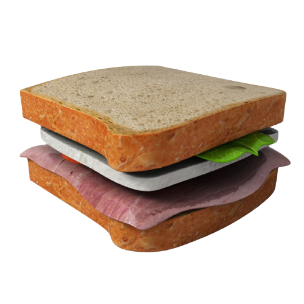
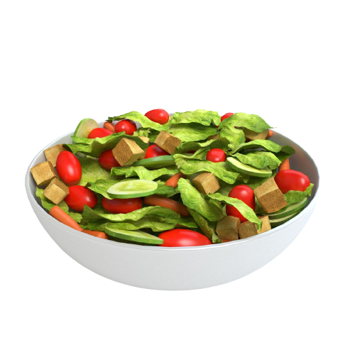
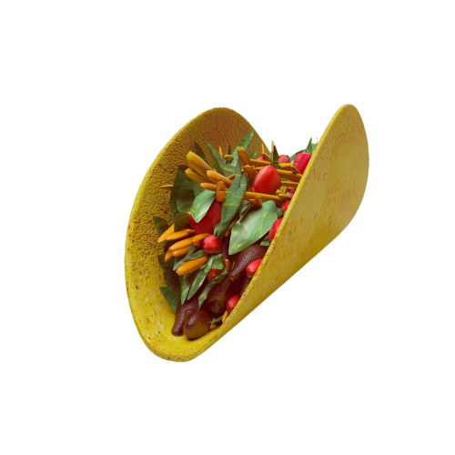
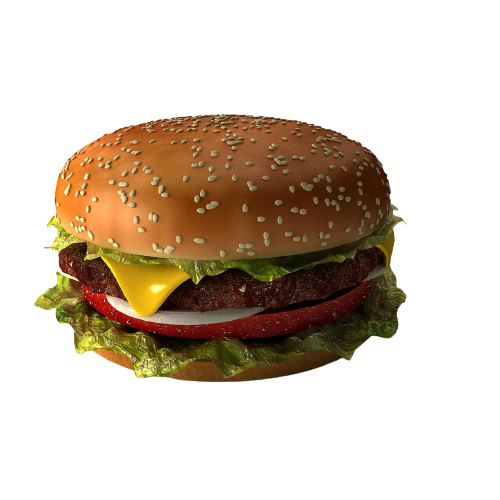

Season with oregano, garlic powder, salt, and pepper.
Bake in the preheated oven for 12-15 minutes or until the crust is golden and the cheese is bubbly.
Remove from the oven, slice, and enjoy your delicious homemade pepperoni pizza!

Chicken Club Sandwich
Ingredients:
Chicken breast, grilled and sliced
Bacon strips, cooked
Lettuce leaves
Tomatoes, sliced
Mayonnaise
Mustard sauce
Salt and pepper to taste
Sliced bread (white or whole wheat)
Instructions:
Grill chicken breast and cook bacon strips until crispy.
Toast the bread slices if desired.
Spread a layer of mayonnaise on one side of each bread slice.
Place lettuce leaves on a bread slice.
Layer grilled chicken slices, bacon strips, and sliced tomatoes.
Add a second bread slice on top and press gently.
Spread mustard sauce on the inside of the top bread slice.
Season with salt and pepper.
Secure the sandwich with toothpicks and cut into halves or quarters.
Serve and enjoy your delicious Chicken Club Sandwich!

Vegetable Salad
Ingredients:
Lettuce leaves, torn
Cherry tomatoes, halved
Cucumber, sliced
Carrots, julienned
Red bell pepper, diced
Yellow bell pepper, diced
Red onion, thinly sliced
Feta cheese, crumbled
Olives, pitted and sliced
Extra virgin olive oil
Balsamic vinegar
Salt and pepper to taste
Instructions:
In a large bowl, combine torn lettuce leaves, halved cherry tomatoes, sliced cucumber, julienned carrots, diced red and yellow bell peppers, and thinly sliced red onion.
Sprinkle crumbled feta cheese and sliced olives over the vegetables.
In a small bowl, whisk together extra virgin olive oil and balsamic vinegar to create the dressing.
Drizzle the dressing over the salad and toss gently to coat all the ingredients.
Season with salt and pepper to taste.
Chill in the refrigerator for at least 30 minutes before serving to allow the flavors to meld.
Serve the refreshing vegetable salad as a side dish or enjoy it on its own.

Tacos
Ingredients:
Soft or hard taco shells
Ground beef or chicken
Taco seasoning
Shredded lettuce
Diced tomatoes
Shredded cheese (cheddar or Mexican blend)
Diced onions
Sour cream
Guacamole
Lime wedges
Instructions:
In a skillet over medium heat, cook the ground beef or chicken until fully browned. Drain excess fat if necessary.
Add taco seasoning to the cooked meat according to the package instructions. Stir well to combine.
Warm the taco shells according to the package instructions.
Assemble the tacos: Spoon the seasoned meat into each taco shell.
Top with shredded lettuce, diced tomatoes, shredded cheese, diced onions, and any other desired toppings.
Add a dollop of sour cream, a spoonful of salsa, and a scoop of guacamole on top.
Garnish with chopped cilantro and serve with lime wedges on the side.

Classic Beef Burger
Ingredients:
Ground beef (80% lean)
Burger buns
Salt and pepper to taste
Cheese slices (cheddar or your choice)
Lettuce leaves
Sliced tomatoes
Sliced onions
Pickle slices
Ketchup and Mayonnaise
Instructions:
Preheat your grill or stovetop pan over medium-high heat.
Divide the ground beef into equal portions and shape them into burger patties. Season each patty with salt and pepper.
Cook the burger patties on the grill or pan, flipping once, until they reach your preferred level of doneness.
In the last minute of cooking, place a slice of cheese on each patty to melt.
Toast the burger buns on the grill or in a toaster until lightly browned.
Place a cooked patty with melted cheese on the bottom half of each bun.
Top with lettuce, sliced tomatoes, onions and pickle slices.
Spread ketchup, mustard, and mayonnaise on the top half of the bun.
Place the top bun over the toppings to complete the burger.
Classic Popcorn
Ingredients:
Popcorn kernels
Vegetable oil or butter
Salt to taste
Instructions:
Place a large pot on the stove over medium heat.
Add enough vegetable oil or butter to coat the bottom of the pot.
Put a few popcorn kernels into the pot and cover it with a lid.
Wait for the test kernels to pop.
This indicates that the oil or butter is hot enough.
Once the test kernels have popped, add the rest of the popcorn kernels to the pot.
Quickly cover the pot with the lid and shake it a bit to evenly distribute heat.
Continue shaking the pot occasionally to prevent burning.
Once the popping slows down, remove the pot from heat and let it sit for a minute to allow any remaining kernels to pop.
Remove the lid, season the popcorn with salt and toss to coat evenly.
Transfer the popcorn to a serving bowl and enjoy your classic popcorn!